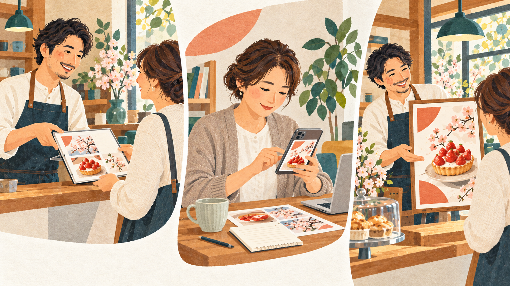
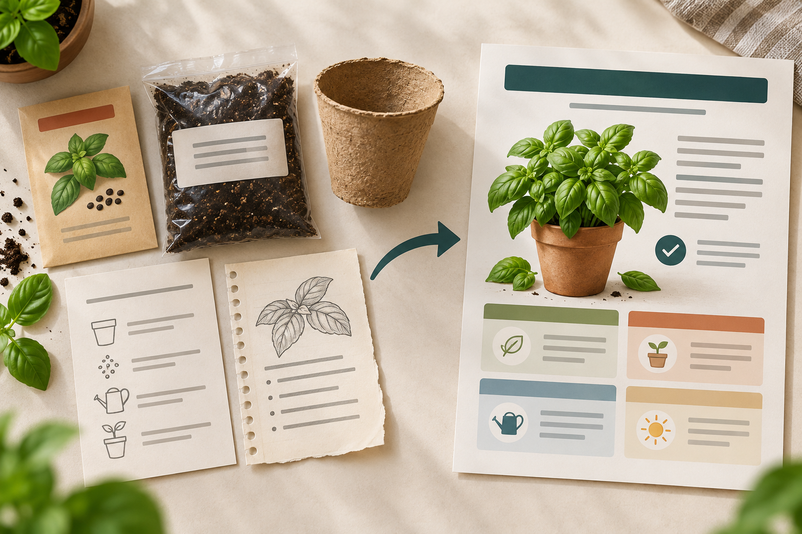
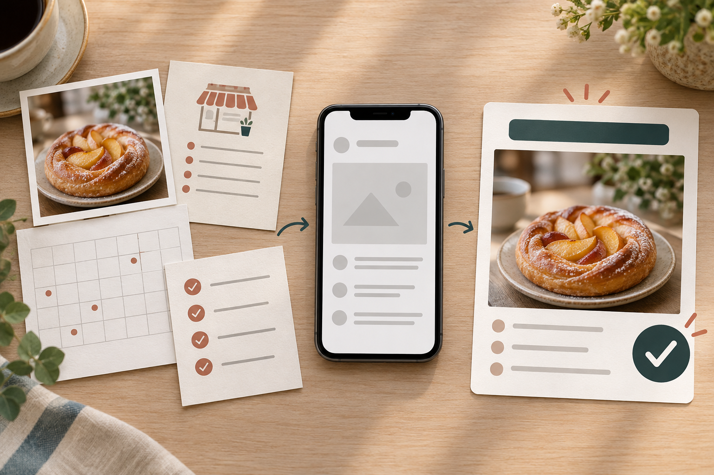
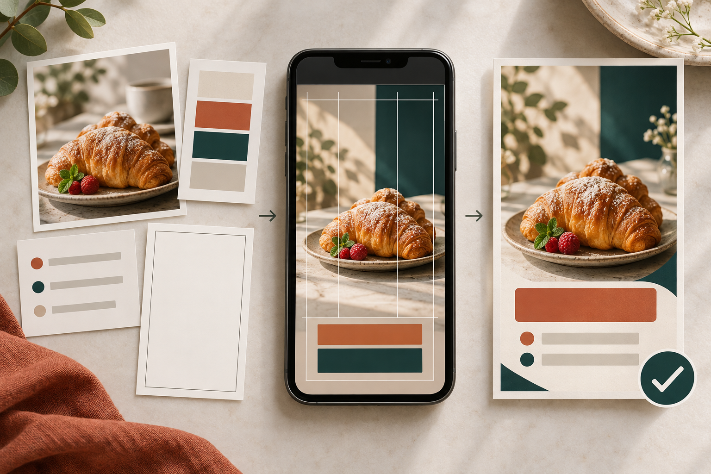
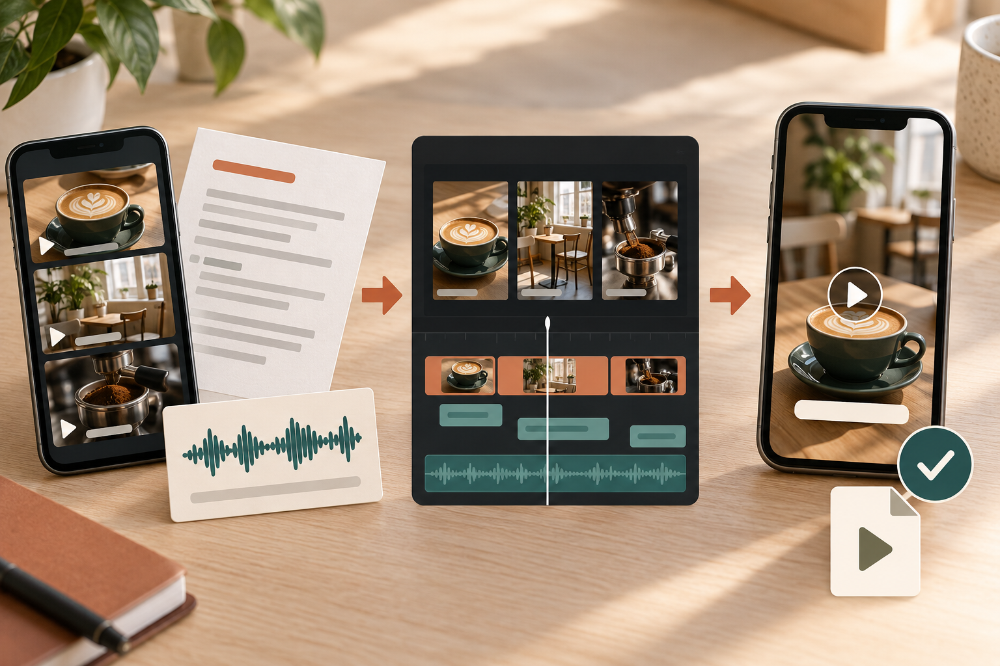

募集を読み、作れる範囲を確認して見本と応募文を用意します。

AIで、どんな仕事ができるのか
お店や事業者の仕事を、使える形にして渡す
「AIで、どんな仕事ができるの？」
「誰が、何にお金を払うの？」
ここが分からないと、AIの操作を覚えても、仕事までつながらないんですよね。
このBOOKで説明するのは、お店や事業者から仕事を請け、使える形にして完成物を渡す仕事です。
たとえば、忙しいカフェの店主が「秋の焼き菓子を知らせる画像を作ってほしい」と頼みます。あなたは店名、日時、写真と希望の雰囲気を受け取り、AIで背景案を作ります。正しい文字を入れ、確認済みのPNGを渡します。
AIは下書きや候補づくりを手伝います。あなたは依頼を読み、間違いを直し、使える完成物にします。
受託は、相手から仕事を請けること。納品は、完成物を渡すことです。報酬は、作る物、本数、期限、修正回数など、依頼主と合意した作業範囲への対価です。
1件の仕事は、こう進みます
探す・合意して作る・渡して受け取る
作る物、期限、報酬、修正、AI利用をそろえます。契約と仮払いを確認してから作ります。
初稿を確認してもらい、完成物を納品。検収後に報酬を受け取ります。
仮払いは、仕事を始める前にサービス側が依頼主から報酬を預かる仕組みです。仮払いを確認してから作業を始めます。
10の順番を確認する
- 募集中の仕事を探す
- 仕事内容と条件を読む
- 見本を添えて応募する
- 条件へ合意して契約する
- 仮払いを確認する
- 制作し、初稿を見せる
- 合意範囲で修正する
- 完成物を納品する
- 依頼主が検収する
- 支払い確定後に報酬を受け取る
クラウドワークスの固定報酬プロジェクト形式を例にしています。サービスや契約形式で流れは変わります。
5つの仕事は、完成物が違います
材料から、何を作って渡すのか

1
文章作成（商品紹介文）
商品資料から、短い紹介文、説明文と仕様を作ります。

2
SNS投稿サポート
確認済みの店舗情報から、依頼主のSNSへ載せる文章を作ります。
5つの仕事（続き）

3
告知画像制作
原稿と素材から、PNGまたはJPGという画像ファイルを作ります。
4
事務・情報整理
会議メモや資料から、議事メモ、一覧表、よくある質問を作ります。

5
短尺動画編集
撮影素材から、字幕、カットと音を整えたMP4を作ります。
すべて説明用のイメージです。実績や受注を示す画像ではありません。
最初の道具
ChatGPTは、材料から下書きを作るAIです
公式入口は https://chatgpt.com/ です。「新しいチャット」を選び、枠内を最初から最後までコピーして貼り付け、送信します。
回答は完成品ではありません。元の材料と見比べ、人が直してから保存します。
1
文章作成（商品紹介文）
商品の事実を、買う人が分かる順番へ整える
通販店やメーカーは商品をよく知っていますが、商品ページの文章を毎回作るには時間がかかります。買う人が「何が届くか」「どう使うか」「注意点は何か」を確認できる文章を作ります。
料金を考える単位は、商品数、文章の本数、文字量と修正範囲です。
商品説明文 作成ネット通販（EC） 商品説明文通販 商品登録 文章
- おうちバジル栽培セット
- 種、土、紙製ポット、育て方カード
- 土を入れ、種をまき、水を与える
- 日当たりのよい室内
- 育つ時期は環境で変わる
室内でバジルを育て始めるためのセットです。
種、土、紙製ポット、育て方カードが入っています。土を入れ、種をまき、水を与えてください。日当たりのよい室内で育てます。
育ち方や食べられる時期は環境で変わります。
商品紹介文の全文をコピーする
次の確認済み情報だけを使い、通販ページの商品説明を作ってください。 【商品情報】 商品名：おうちバジル栽培セット 内容：バジルの種、土、紙製ポット、育て方カード 使い方：土を入れ、種をまき、水を与える 置き場所：日当たりのよい室内 注意：食べられる時期は育てる環境で変わる 【構成】 1. どんな商品か 2. セット内容 3. 使い方 4. 購入前の注意 【禁止】 「必ず育つ」など結果を保証する表現、確認できない日数、健康への効果は書かないでください。
- セット内容にない物を足していない
- 使い方が材料と同じ
- 結果や日数を保証していない
- 購入前の注意が読める
直した文章をメモアプリへ移し、先頭に「自主制作の架空例」と書きます。商品メモと完成文を一緒に保存します。
2
SNS投稿サポート
お店の情報を、投稿できる文章にする
店舗や教室は商品や予定を知っていますが、毎回投稿文へ整えるには時間がかかります。確認済みの情報から、初めて読むお客さまにも内容と次の行動が伝わる文章を作ります。
料金は、投稿本数、媒体、画像や投稿作業を含むか、修正回数で考えます。
SNS 投稿文 作成 店舗Instagram キャプション 作成SNS 運用補助 文章
- ひだまりカフェ
- 焼きりんごトースト
- 10月限定
- 毎日11時から
- なくなり次第終了
- 価格、予約、個数は書かない
10月限定の焼きりんごトーストをご用意します。提供は毎日11時から。なくなり次第終了です。ご来店前に、提供時間をご確認ください。
SNS投稿文の全文をコピーする
あなたは小さなカフェのSNS投稿文を整える担当です。 次の確認済み情報だけを使い、初めて読む人にも内容が伝わる投稿文を2案作ってください。 【確認済み情報】 店名：ひだまりカフェ 商品：焼きりんごトースト 期間：10月限定 提供開始：毎日11時から 終了：なくなり次第 読んだ人にしてほしいこと：来店前に提供時間を確認してもらう 【書き方】 ・最初の1文で、何のお知らせかを伝える ・本文は60〜100字 ・やわらかい敬語 ・確認できない価格、予約、個数は書かない ・最後に、提供時間を確認できる1文を入れる
- 商品名、期間、時間、終了条件が材料と同じ
- 価格、予約、個数を作っていない
- 店に合わない強い言い方がない
直した1案をメモアプリへ移し、先頭に「自主制作の架空例」と書きます。店舗情報と完成文を一緒に保存します。
3
告知画像制作
日時と内容が伝わる画像を作る
店舗やイベント主催者は、原稿と写真があっても、見やすく並べる時間がない時に依頼します。用途、サイズ、原稿、写真、ロゴ、色を受け取り、AIで文字のない背景を作ります。正しい文字はCanvaなどで入れます。
「ひだまりカフェ／秋の焼き菓子の日／10月18日／11時から」を縦4：5の背景へ重ね、保存PNGと依頼メモを照合します。
バナー 作成Instagram 画像 制作店舗 告知画像 Canva
特典03で背景・文字入れ・PNG保存を進めるPNG/JPGは画像ファイルです。画像枚数、サイズ、案数、修正、素材の担当を先にそろえます。
4
事務・情報整理
ばらばらの情報を、確認できる資料へまとめる
小さな会社やチームは、会議メモ、メール、商品資料がばらばらで、必要な情報を探すのに時間がかかる時に依頼します。議事メモ、一覧表、よくある質問へ整えます。
最初は架空メモを「決まったこと」「担当と期限」「まだ確認が必要なこと」へ分け、元メモと完成資料を一緒に保存します。
オンラインアシスタント 資料整理会議メモ 議事録 作成データ整理 事務
特典04で架空の商品5件を整理する料金は資料数、文字量、作業時間、更新回数で考えます。決定と提案を分け、担当や期限を元資料へ戻します。個人情報や社外秘をAIへ入れてよいか確認します。
5
短尺動画編集
撮影素材を、見られるMP4へ仕上げる
店舗や発信者は、撮影済みの素材があっても、不要部分を切り、字幕と音を整える時間がない時に依頼します。撮影素材、台本、参考動画を受け取り、長さ、向き、字幕、ロゴ、BGM、修正を確認します。
使用許可のある3素材を順に並べ、不要部分を切り、字幕を入れます。最初から最後まで再生してMP4を保存します。
ショート動画 編集リール 動画編集60秒 動画 字幕
特典05で見本MP4と字幕修正を進めるMP4は再生用動画ファイルです。料金は動画本数、完成後の長さ、元動画の長さ、修正回数で考えます。素材が長い、修正が多い、複数本ならパソコンが進めやすい場合があります。
仕事を見つける
募集へ応募するか、サービスを出品する
説明用の架空募集
カフェのInstagram投稿文5本／店名・商品情報・営業時間・写真を支給／テキスト納品／仮払い確認から7日後／事実の誤りと文体調整を1回／AI使用は応募時に伝え、機密情報を入れない／報酬は募集画面の固定報酬を作業範囲と一緒に確認
| 何を作る | 投稿文5本 |
|---|---|
| 材料 | 店舗情報と写真 |
| 納品形式 | テキスト |
| 期限 | 仮払い確認から7日後 |
| 修正 | 1回の範囲 |
| AI利用 | 応募時に伝え、機密情報を入れない |
| 報酬 | 表示額と作業範囲を契約前に確認 |
| 判断 | 見本・期限・連絡条件を守れるか |
経験を盛らずに伝える
見本を添えて応募し、条件をそろえる
条件を満たせない時や不明点が残る時は、見送るか先に質問します。送る時は範囲、期限、報酬、AI利用を確認します。
条件確認
作成物、形式、期限、修正、素材、AI利用をそろえ、契約と仮払い確認後に着手します。
初稿共有
最初に確認してもらう案と、確認してほしい場所を共有します。
納品
修正後の完成物を納品し、本数、サイズ、形式の確認をお願いします。
受注保証ではなく、練習の計画例
7日で、見本と応募準備を1組作る
今日やること
5仕事から1つ選び、募集を1件開きます。「誰が頼むか」「何を作るか」「何を材料でもらうか」「何を納品するか」をメモしてください。
アカウント作成や応募は必須ではありません。練習回数や日数だけで受注できるとは判断せず、募集条件と自分の見本の差を見ます。